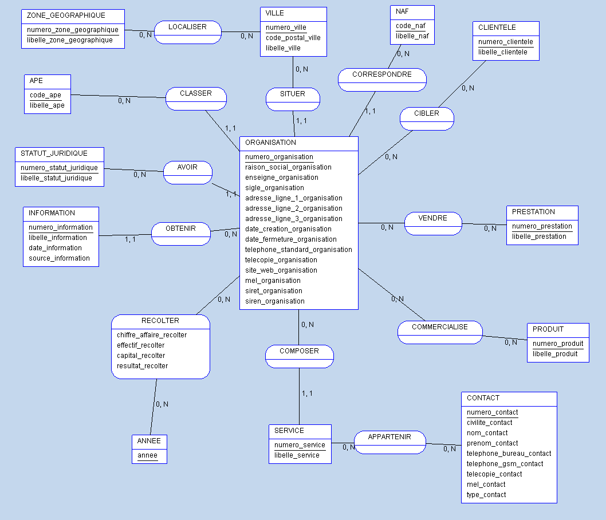
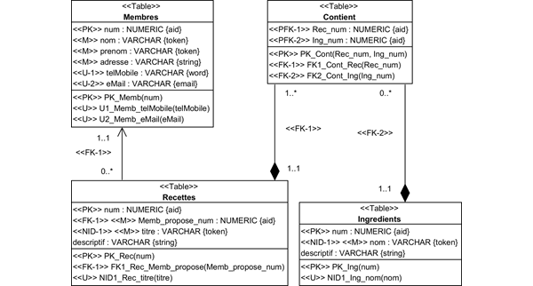
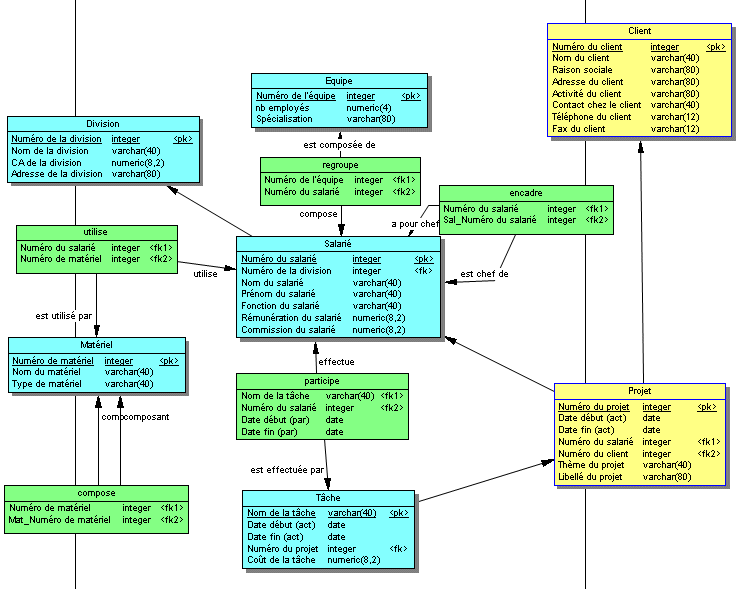

La Méthode MERISE
La méthode MERISE est une méthode de conception de bases de données qui permet de structurer le processus de développement d'un système d'information.
Dictionnaire de données
Le dictionnaire de données est une liste exhaustive de toutes les données qui seront utilisées dans le système d'information. Chaque donnée est décrite de manière détaillée, notamment son nom, sa description, son type, sa taille, etc. Cela permet d'avoir une vue d'ensemble des informations manipulées par le système.

Règles de gestion
Les règles de gestion définissent les contraintes et les règles spécifiques qui régissent la manipulation et le traitement des données dans le système. Elles permettent de garantir la cohérence, l'intégrité et la qualité des données. Ces règles peuvent concerner la validation des données, les relations entre les entités, les autorisations d'accès, etc.
Modèle Conceptuel de Données (MCD)
Le MCD est une représentation graphique des entités (ou objets métier), de leurs attributs et des relations qui existent entre ces entités. Il s'agit d'un schéma conceptuel qui permet de visualiser la structure générale des données et de comprendre les interactions entre les différentes entités du système.

Modèle Logique de Données (MLD)
Le MLD est une transformation du MCD en un modèle plus proche de la réalité du système de gestion de bases de données (SGBD). Dans le MLD, les entités sont traduites en tables, les attributs en colonnes, et les relations en contraintes de clés étrangères. Cela permet de définir la structure physique de la base de données sans se préoccuper des détails d'implémentation.
Modèle Physique de Données (MPD)
Le MPD est la concrétisation du modèle logique de données dans un SGBD spécifique. Il définit les détails d'implémentation comme le type de données, les index, les contraintes d'intégrité, etc. Le MPD est généralement exprimé à l'aide d'un langage de définition de données propre au SGBD choisi (par exemple SQL pour les bases de données relationnelles).
